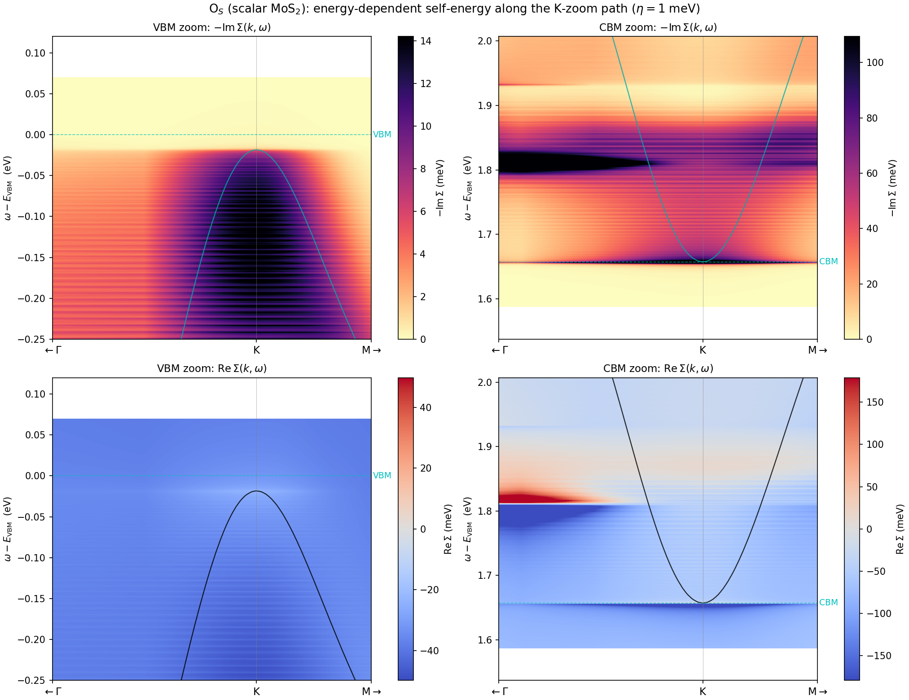
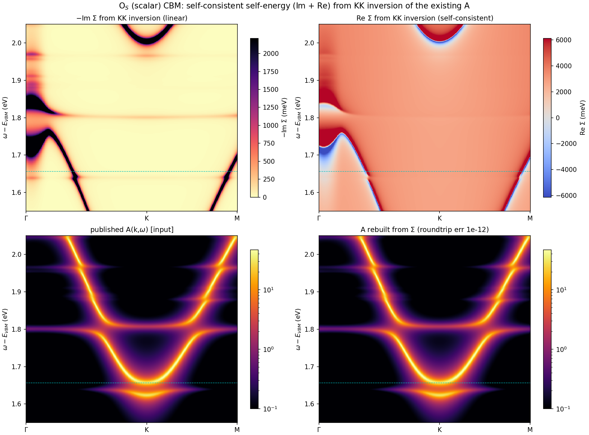
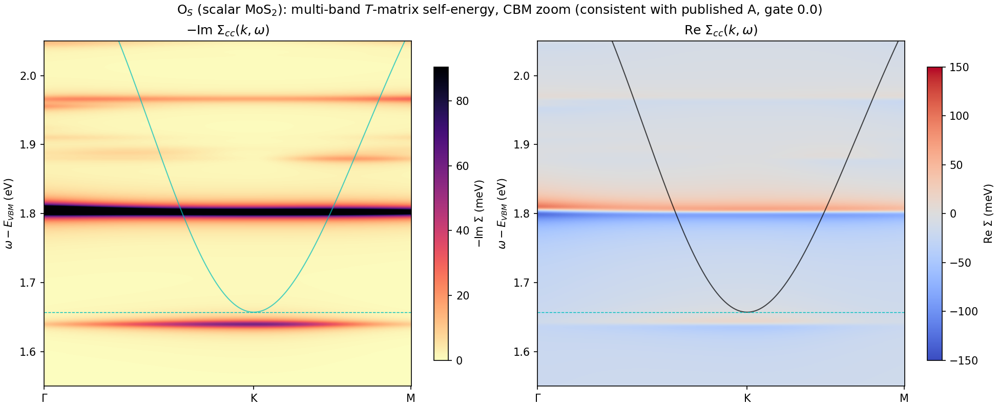
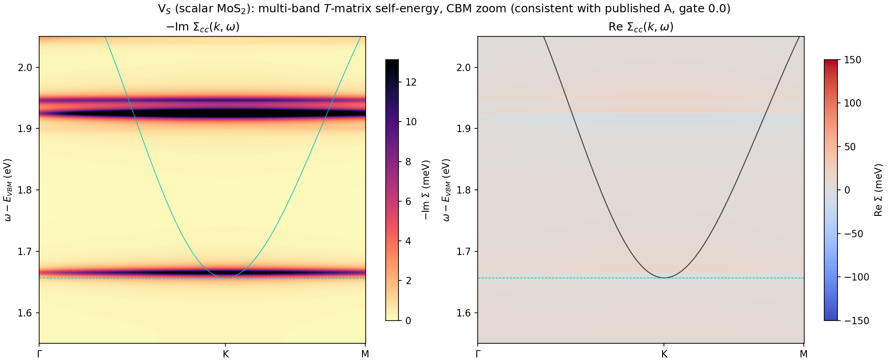
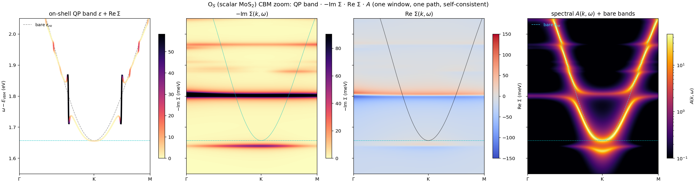
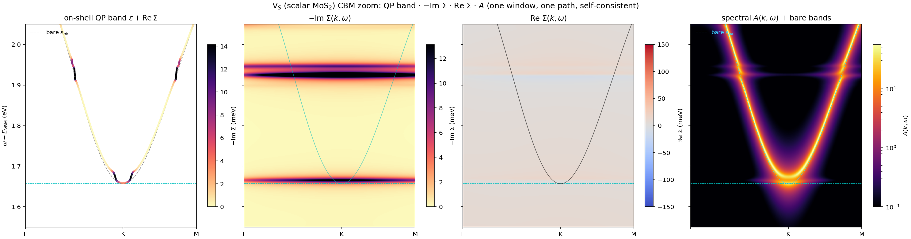
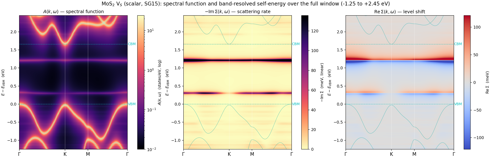

1 · The relation
For a single carrier band the retarded Green function is $G_n(k,\omega)=[\omega-\varepsilon_{nk}-\Sigma_n(k,\omega)]^{-1}$, so the spectral function follows directly from the self-energy:
The Kubo mobility engine already builds this object internally — the transport integrand is $[A_s(\omega)]^2$ — so the stored $\Sigma$-field is the input to a spectral function by construction. The question this page answers: does feeding that field through Dyson reproduce the spectral maps computed the other way (the exterior T-matrix relation of the augmentation page §9)?
2 · Reconstruction (no new calculation)
The $\Sigma$-field is stored per state (each grid $k$ × band within the transport window), not per $(k,\omega)$-path. To place it on a path, the deterministic $300^2$ state grid of the mobility run is rebuilt in the same Wannier gauge and the same energy window — the reconstructed state energies match the stored ones to $10^{-4}$ meV, a bit-level check that the state$\to(k,\mathrm{band})$ map is exact. The carrier-band states are then barycentrically interpolated (Delaunay, built once, applied to all 2701 frequency slices) onto a dense K-centred path. Everything runs on the login node — it is interpolation, not a new T-solve.

3 · The consistency check

spectral_path.py output. The quasiparticle parabola, its avoided-crossing upper arm, and the flat resonance line at $1.80$ eV all reproduce.The maps agree in structure but are not bit-identical, for three understood reasons — each a physics statement, not an error:
- Dyson vs bubble (the informative one). The $\Sigma$-field Dyson result moves the quasiparticle pole down by $\mathrm{Re}\,\Sigma$: the K-valley peak sits at $1.587$ eV, whereas the direct map peaks at $1.657$ eV (the bare CBM). The 70 meV gap is exactly the $\mathrm{Re}\,\Sigma$ pull-down — the direct map used the bubble form $G_0+G_0^2T$ (pole fixed at the bare band, T adds a satellite), while the single-band $G=[\omega-\varepsilon-\Sigma]^{-1}$ moves it. This independently re-derives the O$_S$ conduction-band pull-down of §E.5.1, now from a completely different data path.
- Linewidth. The Kubo field carries $\eta=1$ meV; the direct map was broadened at $\eta=5$ meV — hence the sharper lines on the left.
- Single-band vs multi-band trace. The Dyson reconstruction uses only the carrier band; the direct map traces the full 11-band active space. They coincide where the carrier band dominates (the zoom window) and diverge deeper, where other active bands contribute weight.
Bottom line: the self-energy field and the spectral function are mutually derivable, and the round trip is clean once the Dyson-vs-bubble pole convention is accounted for. The 70 meV discrepancy is not a failure — it is the same $\mathrm{Re}\,\Sigma$ physics seen from the other side.
4 · The reverse map: recovering $\Sigma$ from the existing spectral function
§3 built $A$ from a $\Sigma$-field. The inverse is also possible — and with nothing but the already-published spectral map, no new calculation. The imaginary part of the Green function is handed over directly, $\mathrm{Im}\,G=-\pi A$; its real part is fixed by causality (Kramers–Kronig / Hilbert transform), $\mathrm{Re}\,G(\omega)=\mathcal P\!\int\! \frac{A(\omega')}{\omega-\omega'}\,d\omega'$; and the self-energy follows from Dyson inverted:
This $\Sigma$ is self-consistent by construction: fed back through $A=-\frac1\pi\mathrm{Im}\,[\omega-\varepsilon-\Sigma]^{-1}$ it returns the input spectral function exactly. The round trip closes to $1.4\times10^{-12}$ states/eV for O$_S$ (and $1.7\times10^{-12}$ for V$_S$) — machine precision.

Caveat, stated plainly: this treats the multi-band trace $A$ as a single carrier band (exact where that band dominates — the zoom window — approximate deeper) and the Kramers–Kronig principal value is evaluated on the finite stored frequency window. Within those bounds the recovered $\Sigma$ reproduces the spectral function to machine precision. It is the direct answer to “can existing data give a self-consistent self-energy?” — yes, by causality alone.
5 · The physical self-energy: the multi-band $T$-matrix, Re and Im
The Kramers–Kronig route of §4 gives a single-band effective self-energy whose real part diverges to $\pm$thousands of meV where the spectral weight vanishes ($1/G$ blows up) — correct by construction but not a physical level shift. The physical object is the multi-band $T$-matrix self-energy $\Sigma_{nm}(k,\omega)=c\,N_k\,T_{nm}(k,\omega)$, whose diagonal $\Sigma_{cc}$ on the carrier band is a proper tens-of-meV quantity. It was dumped directly from a rerun of the spectral-function engine at the identical settings that produced the published map — and that rerun reproduces the published $A(k,\omega)$ bitwise ($\max|A_{\rm new}-A_{\rm published}|=0.0$), so this $\Sigma$ is by construction the self-energy behind that spectral function.


Two self-energies, one spectral function: the KK inversion (§4) and the multi-band $T$-matrix (§5) both reproduce the same published $A$ — the former as an effective single-band object, the latter as the physical many-band self-energy. Which one to quote depends on the question: the KK $\Sigma$ for an exact single-band round trip, the $T$-matrix $\Sigma$ for the physical level shift and lifetime.
6 · Four faces, one window
The quasiparticle band, the self-energy, and the spectral function are the same physics read three ways. Here they are on one energy window (1.55–2.05 eV), one $k$-path, one figure scale — all four derived from the single self-consistent run (721-point path, $\eta=5$ meV), so nothing is stitched across settings.


7 · The full window: what the zoom could not see
Everything above is a zoom — a K-centred path over a few hundred meV around one band edge, which is where the transport physics lives and where the fine structure needs 0.25 meV frequency resolution to resolve. That framing has a blind spot, and it is worth measuring rather than assuming. This section computes the V$_S$ self-energy over the entire $-1.25$ to $+2.45$ eV window on the full $\Gamma$–K–M–$\Gamma$ path (926 frequency points at 4 meV, $\eta=20$ meV, scalar SG15 host, active bands 7–17), on exactly the axes used for the spectral panoramas.

The self-energy is dominated by two $k$-flat resonance ridges, both of which sit outside the CBM zoom window of §3–§6 ($1.45$–$2.16$ eV):
| ridge | $-\mathrm{Im}\,\Sigma$ peak ($k$-averaged) | FWHM | strength along $k$ | $\mathrm{Re}\,\Sigma$ zero crossing |
|---|---|---|---|---|
| $\omega = +0.306$ eV | 94.9 meV | 44 meV | 13 – 148 meV | $+0.306$ eV, $-53/+45$ meV |
| $\omega = +1.214$ eV | 252.8 meV | 44 meV | 168 – 392 meV | $+1.210$ eV, $-122/+138$ meV |
The contrast is sharp. Over the full window $-\mathrm{Im}\,\Sigma$ has a median of 1.9 meV and a maximum of 397 meV; restricted to the published zoom window the maximum is 8 meV. The zoom sees 1/50 of the peak scattering — not because it is wrong, but because it looks at a genuinely quiet stretch of the spectrum while the two structures that dominate the self-energy lie below it. This is the honest cost of a zoom, and it is the reason to compute the panorama once even when the transport question only needs the band edge.
What the ridges are. The upper one, $+1.214$ eV, is the V$_S$ $e$-doublet: four independent routes place it at $+1.19$–$1.21$ eV, the SG15 $T$-matrix value being $+1.219$ — agreement to 5 meV on a 4 meV grid with 20 meV broadening. The self-energy therefore re-derives the defect level from a third direction: not as an eigenvalue of $H_{\rm eff}$ and not as a peak in $A$, but as the pole of the scattering vertex. The lower ridge at $+0.306$ eV lives in the $a_1$ region, and here the page must be careful: $a_1$ is the known slow mode of this system, drifting with every basis ($+0.001$ at 70 bands, $+0.186$–$+0.2046$ at 160, against a supercell-DFT truth of $+0.1026$). The $e$-doublet position is converged; the $a_1$ ridge position is basis-limited and should not be quoted as a number.
An internal causality check comes for free. $\mathrm{Re}\,\Sigma$ crosses zero exactly at both $-\mathrm{Im}\,\Sigma$ maxima and flips sign dispersively across them ($-122/+138$ meV around the doublet). That is the Kramers–Kronig partner of a Lorentzian absorption peak, reproduced here with no KK transform anywhere in the calculation — the Re and Im parts come out of the same $T$-matrix solve. It is the same consistency the KK inversion of §4 imposes by construction, arriving instead as an output.
One structural remark visible only at this scale: the ridges are flat in energy but far from uniform in strength — the doublet ridge varies 168–392 meV along $\Gamma$–K–M–$\Gamma$ and the $a_1$ ridge 13–148 meV. The resonance energy is $k$-independent, as a localized defect level must be; what disperses is the coupling matrix element $|\langle\psi_{nk}|\Delta V|\phi_d\rangle|^2$ between the Bloch state and the defect orbital. A zoomed view at fixed $k$-range cannot separate those two statements.
Cost note: 51 s wall on one Anvil highmem node (38 s in the $\omega$ loop, 41 ms per frequency) using the optimized post-processor described on the Anvil page §5 — the band-diagonal $\Sigma$ is stored behind a SPEC_SAVE_SIG=1 flag so the same code path serves both the spectral function and this figure.
8 · Reproducing
Field reconstruction: post/sigma_kw_path.py (grid rebuild + barycentric interpolation, with the $10^{-4}$ meV state-energy gate). Spectral round-trip and A/B overlay: inline Dyson from the reconstructed skw_*.npz against the stored spectral_path.npz. Data: the Kubo $\Sigma$-fields sigfield_{OSSG15,SVSG15,SESSG15}_{e,h}.npy from the mobility campaign. Full-window map (§7): post/spectral_soc_fast.py with SPEC_SAVE_SIG=1 (band-diagonal $\Sigma$ alongside $A$, same solve) and post/plot_sigma_full.py (pole-weighted band reduction); data sv_sigma_full/spectral_sig.npz.